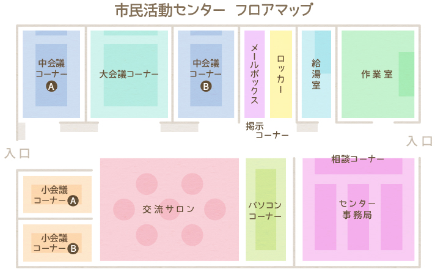

会議コーナー
団体の会議や打ち合わせなど、センターに登録されている団体の方はどなたでもご利用になれます。会議室の使用時間は2時間以内です。予約せず当日来所された時に空いているコーナーがある場合は、そのコーナーをご利用いただけますが、できるだけ予約されることをお勧めいたします。会議室の予約は、2週間前から窓口・電話にて受付しています。
- 予約方法
- 直接来所…会議コーナー予約申込書に記入
- 電話予約…当センター職員が予約申込用紙に記入
ロッカー
団体で保管しなければならない物の置き場所にロッカーは便利です。活動に必要な印刷用紙、機材、参考図書、事 務用品等の保管場所としてご利用いただけます(施錠はできますが、貴重品の保管はご遠慮ください)。契約は1年間(4月～翌年3月)で毎年度末に次年度利 用のお申し込みを受け付けます。申し込み多数の場合は抽選になります。鍵はセンター事務室で保管します。
ご利用の際はセンター登録が必要です。
ご利用の際はセンター登録が必要です。
- ご利用料金
- 大ロッカー…2,400円/年
- 小ロッカー…1,200円/年
作業室
コピー機や印刷機、製本機を会報や催し物のチラシ作りに活用できます。
コピー機1台(有料)、 印刷機2台(有料)、 紙折機1台(無料)、 丁合機1台(無料)、 裁断機1台(無料) が設置されています。 ※用紙は原則としてご持参ください。購入希望の際はセンター事務室にお申込ください。
他に、ラミネーターやポスタープリンターもご利用いただけます。
ご利用の際はセンター登録が必要です。
コピー機1台(有料)、 印刷機2台(有料)、 紙折機1台(無料)、 丁合機1台(無料)、 裁断機1台(無料) が設置されています。 ※用紙は原則としてご持参ください。購入希望の際はセンター事務室にお申込ください。
他に、ラミネーターやポスタープリンターもご利用いただけます。
ご利用の際はセンター登録が必要です。
- ご利用料金
- コピー機 …<白黒>10円/枚 <カラー>B4まで…50円/枚 A3…60円/枚
- 印 刷 機 …<製版>B4まで…50円/枚 A3…80円/枚<印刷>B4まで…10円/10枚 A3…15円/10枚
パソコンコーナー
センターに登録されている団体の方はどなたでもご利用になれます。プリンタやスキャナが接続されています。書類作成や、インターネットでの情報収集などに お役立てください。(ただし、検索は市民活動やボランティア活動に関わることに限らせていただきます)。フロッピーディスクやCDなどの外部記憶媒体をご利用の際はウィルスチェックをさせていただきます。[混雑時には30分を目安に譲り合ってご利用ください]
センター事務局
コーディネーターが常駐し、ボランティアなど市民活動に関する相談、情報の提供、人材育成などを行っています。センター登録(市民活動団体・個人ボラン ティア)を受け付けています。センターへの登録申込みは、所定の申請書でお申込ください。登録書・申請書は、センター事務室に置いています。宮崎市民活動 保険に関する事務もここで取り扱っています。
メールボックス
郵便物や案内状、ファックスの受け取りなど、情報の受け皿としてご利用ください。引き出し(幅27cm×奥行き36cm×深さ6cm)式で施錠できませんので、小包や書留郵便はお預かりできません。ご利用は無料です。
ご利用の際はセンター登録が必要です。
ご利用の際はセンター登録が必要です。
給湯室
給湯機器や茶器類は自由にお使いいただけます(お茶の葉などの消耗品はご持参ください)。使用上の注意事項を守って正しくお使いください。。
交流サロン
個人や団体の交流の場としてご利用いただけます。市民の方はどなたでも自由にご利用いただけます。